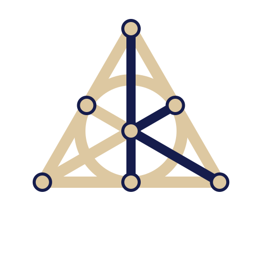

 |
kyosu v0.1.0
Complex Without Complexes
|
Hamilton (1837) defined the complex numbers without \(\sqrt{-1}\), as the ordered pairs of reals with the product \((a, b)(c, d) = (ac - bd, ad + bc)\). The same formula applied to pairs of complex numbers gives a commutative algebra, and not the quaternions. Hamilton found the quaternions in 1843, and Graves (1843) and Cayley (1845) the octonions. The doubling that produces the quaternions from the complex numbers, and the octonions from the quaternions, involves a conjugation, and is due to Dickson (1919).
Let \(A\) be a real algebra with a unit and an involution \(x \mapsto \overline{x}\), a linear map with \(\overline{\overline{x}} = x\) and \(\overline{xy} = \overline{y}\,\overline{x}\). The Cayley-Dickson double of \(A\) is the algebra \(A \times A\) with the product and the involution
\[ (a, b)\,(c, d) = \left(ac - \overline{d}b,\: da + b\overline{c}\right), \qquad \overline{(a,b)} = \left(\overline{a}, -b\right). \]
From \(A = \mathbb{R}\), with the identity as involution, the doubling gives in turn \(\mathbb{C}\), \(\mathbb{H}\), \(\mathbb{O}\), and an infinite sequence of algebras of dimension \(2^n\). The literature uses several forms of the doubling formula, and KYOSU implements the one above.
The construction is the same at every step, with two consequences for the library:
kyosu::sqrt is therefore one function, whether its argument is a double, a complex number, a quaternion, or an element of dimension 32.
Let \(\mathbb{K}\) be the Cayley-Dickson algebra of dimension \(N\). Its standard basis \(e_0, \ldots, e_{N-1}\) follows the doubling: for \(k < N/2\), \(e_k\) is the pair \((e_k, 0)\) and \(e_{N/2+k}\) the pair \((0, e_k)\), built on the basis of the algebra of dimension \(N/2\). Then \(e_0 = 1\) and \(e_i^2 = -1\) for \(i > 0\). An element of \(\mathbb{K}\) is written
\[ z = z_0 + \sum_{i=1}^{N-1} z_i\,e_i. \]
The components \(z_i\) are IEEE float or double values, or, through EVE, SIMD registers of them.
A value prints each component followed by the label of its basis element:
| Dimension | Labels of \(e_1, \ldots, e_{N-1}\) |
|---|---|
| 2 | \(i\) |
| 4 | \(i, j, k\) |
| 8 | \(i, j, k, l, il, jl, kl\) |
| 16 and more | the index: \(z_0\) for the real part, then \(z_1, \ldots, z_{N-1}\) |
In dimension 8, \(l = e_4\), and each of the last three labels is the product it names: \(e_5 = il\), \(e_6 = jl\), and \(e_7 = kl\).
| Quantity | Definition | Function |
|---|---|---|
| real part | \(z_0\) | kyosu::real |
| pure part | \(\underline{z} = \sum_{i=1}^{N-1} z_i\,e_i\) | kyosu::pure |
| modulus, or norm | \(\vert z\vert = \sqrt{\sum_{i=0}^{N-1} z_i^2}\) | kyosu::abs |
| conjugate | \(\overline{z} = z_0 - \underline{z}\) | kyosu::conj |
| inverse | \(z^{-1} = \overline{z}/\vert z\vert^2\), for \(z \neq 0\) | kyosu::rec |
| direction | \(I_z = \mathrm{sign}(z_1)\,\underline{z}/\vert\underline{z}\vert\) | third element of kyosu::to_polar |
| argument | \(\theta = \mathrm{sign}(z_1)\arccos(z_0/\vert z\vert)\), in \([-\pi, \pi]\) | kyosu::arg |
The direction and the argument are defined here for \(z_1 \neq 0\). For a real \(z\), kyosu::arg returns \(0\) or \(\pi\), and kyosu::to_polar returns \(0\) as the direction.
With \(e^{\theta I_z}\) defined as \(\cos\theta + I_z\sin\theta\), an element with \(z_1 \neq 0\) has the polar form
\[ z = |z|\,e^{\theta I_z} = |z|\,(\cos\theta + I_z\sin\theta), \]
since \(I_z^2 = -1\). kyosu::to_polar returns \(|z|\), \(\theta\), and \(I_z\) as a kumi::tuple, and kyosu::from_polar builds \(z\) back from them.
A division algebra is an algebra where \(xb = a\) and \(bx = a\) have exactly one solution for every \(a\) and every nonzero \(b\). The doublings up to dimension 16 lose structural properties in a fixed order. By Frobenius (1878), the only finite-dimensional associative division algebras over \(\mathbb{R}\) are \(\mathbb{R}\), \(\mathbb{C}\), and \(\mathbb{H}\), up to isomorphism. By Hurwitz (1898), the only normed division algebras with a unit over \(\mathbb{R}\) are these three and \(\mathbb{O}\), up to isomorphism, a normed algebra having a positive definite quadratic form \(N\) with \(N(xy) = N(x)N(y)\). By Bott and Milnor (1958) and Kervaire (1958), a finite-dimensional division algebra over \(\mathbb{R}\), associative or not, has dimension 1, 2, 4, or 8.
| Dimension | Algebra | Properties lost | Structure retained |
|---|---|---|---|
| 1 | \(\mathbb{R}\) | commutative ordered field | |
| 2 | \(\mathbb{C}\) | order | commutative field |
| 4 | \(\mathbb{H}\) | commutativity | division ring |
| 8 | \(\mathbb{O}\) | associativity | alternative division algebra |
| 16 | \(\mathbb{S}\), the sedenions | alternativity, division, multiplicative norm | flexible power-associative algebra |
| \(2^n,\ n>4\) | flexible power-associative algebra |
No total order on \(\mathbb{C}\) is compatible with its field operations: with such an order, \(i > 0\) would give \(i^2 = -1 > 0\), and \(i < 0\) would give \((-i)^2 = -1 > 0\). KYOSU therefore defines the equality and the componentwise predicates on its values, and no relational operator.
A real analytic function evaluated at a real argument may also leave the reals: \(\sqrt{-1}\) is the element \(i\). A real argument outside the real domain of a function gives a complex result by default, and the option kyosu::real_only selects the real function, which returns NaN.
In \(\mathbb{H}\), \(ij = k\) and \(ji = -k\). The equations \(xb = a\) and \(bx = a\) then have distinct solutions in general, \(ab^{-1}\) and \(b^{-1}a\), and each defines a division.
In \(\mathbb{O}\), the products \((ab)c\) and \(a(bc)\) differ in general. On the standard basis,
\[ (e_1e_2)e_4 = e_7, \qquad e_1(e_2e_4) = -e_7. \]
The associator \([a,b,c] = (ab)c - a(bc)\), computed by kyosu::associator, measures the difference. It is \(2e_7\) on the triple above, and zero on any three quaternions.
The octonions are alternative: the associator is an alternating function of its three arguments. By Artin's theorem, the subalgebra generated by any two elements is then associative.
The sedenions have zero divisors, nonzero elements \(x\) with \(xy = 0\) for some nonzero \(y\). On the standard basis,
\[ (e_3 + e_{10})(e_6 - e_{15}) = 0, \]
with both factors of norm \(\sqrt2\). The norm is no longer multiplicative, and the sedenions are no longer alternative. A nonzero element \(x\) keeps the two-sided inverse \(\overline{x}/|x|^2\), which is its only inverse when \(x\) is not a zero divisor. The quotients \(ab^{-1}\) and \(b^{-1}a\) are then defined and finite for any nonzero \(b\), and in general they no longer solve \(xb = a\) and \(bx = a\):
Every algebra of the sequence is power-associative: the subalgebra generated by one element is associative, so \(z^mz^n = z^{m+n}\) holds in every dimension. Every algebra of the sequence is also flexible, \((ab)a = a(ba)\).
| Mathematical fact | API |
|---|---|
| No order compatible with the operations beyond \(\mathbb{R}\) | No relational operator. kyosu::is_equal and the componentwise predicates. |
| Real domains not preserved | A complex result by default. f[kyosu::real_only] calls the EVE function, which returns NaN. |
| Two divisions | a / b is \(ab^{-1}\) and kyosu::ldiv(b, a) is \(b^{-1}a\). Up to the octonions, they solve \(xb = a\) and \(bx = a\). |
| Nonzero associator | An expression is evaluated with its parentheses as written. kyosu::associator returns \([a,b,c]\). |
| Each algebra embedded in the next | An operation on mixed dimensions returns the larger one, the missing components being zero. |
The sum of a complex number and a quaternion, for instance, is a quaternion, and no conversion appears in the source.
A real analytic function is a function from an open subset of \(\mathbb{R}\) to \(\mathbb{R}\) that is the sum of a convergent power series in a neighborhood of each point. It extends to a holomorphic function \(f\) on a neighborhood of its domain in \(\mathbb{C}\), symmetric about the real axis, with \(f(\overline{w}) = \overline{f(w)}\). A function with a branch cut, such as kyosu::log or kyosu::sqrt, takes the principal branch, holomorphic on \(\mathbb{C} \setminus (-\infty, 0]\).
Every element \(c \in \mathbb{K}\) satisfies
\[ c^2 - 2c_0\,c + |c|^2 = 0, \]
so the real span of \(1\) and \(c\) is a subalgebra. When \(\underline{c} \neq 0\), let \(u_c = \underline{c}/|\underline{c}|\). Since \(u_c^2 = -1\), the map \(x + iy \mapsto x + y\,u_c\) is an isomorphism from \(\mathbb{C}\) onto that subalgebra, and it sends \(c_0 + i|\underline{c}|\) to \(c\). The extension of \(f\) at \(c\) is the image of \(f(c_0 + i|\underline{c}|)\) by this isomorphism:
The direction \(-u_c\) sends \(c_0 - i|\underline{c}|\) to \(c\), and since \(f(\overline{w}) = \overline{f(w)}\), it gives the same result. For kyosu::log, the scheme gives \(\log c = \ln|c| + u_c\arccos(c_0/|c|)\), an angle in \([0, \pi]\) along \(u_c\), where kyosu::arg carries the sign of \(c_1\). When \(\underline{c} = 0\), \(c\) is real, and the scheme applies where \(f(c_0)\) is real.
The functions that are not real analytic, such as kyosu::abs, kyosu::arg, and kyosu::conj, are outside this scheme and have a definition of their own.